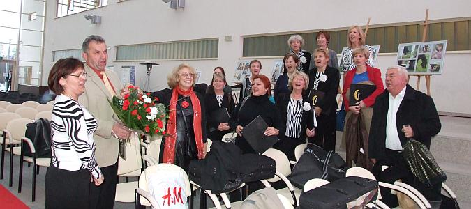

A tymczasem w Cameracie...
.
2013-11-11
Wielickie uroczystości patriotyczne rozpoczęła msza św. w Kościele św. Klemensa sprawowana w intencji Ojczyzny.Po zakończeniu nabożeństwa odbył się tradycyjny przemarsz pocztów sztandarowych oraz złożenie kwiatów pod pomnikiem Odrodzenia Polski na wielickich plantach.

Wieczorem w Centrum Edukacyjno-Rekreacyjnym „Solne Miasto” zaczyna się Koncert z okazji Narodowego Święta Niepodległości podczas którego miała miejsce inauguracja Wielickiej Orkiestry Kameralnej. W koncercie wzięły udział wielickie chóry: Lutnia i Camerata a także Chór im. Jana Pawła II ze Strumian.
Byli również zaproszeni goście.
Program koncertu przygotował i prowadził Piotr Piwko. Do organizacji koncertu i przygotowania chórów włączyły się także: Jadwiga Szado - dyrygentka chóru Lutnia oraz Izabela Szota - dyrygentka chóru Camerata.
Licznie zgromadzona publiczność miała okazję wysłuchać pięknych patriotycznych utworów w wykonaniu chórów i orkiestry z repertuaru: Witolda Lutosławskiego, Feliksa Janiewicza, Stanisława Moniuszko i Ignacego Padarewskiego. Zwieńczeniem koncertu był ostatni utwór z repertuaru Wojciecha Kilara - „Orawa”.

© Stowarzyszenie Muzyczne Chór Camerata Wieliczka
Projekt i wykonanie:  Prowadzenie strony: Małgorzata Wysocka-Cebula
Prowadzenie strony: Małgorzata Wysocka-Cebula